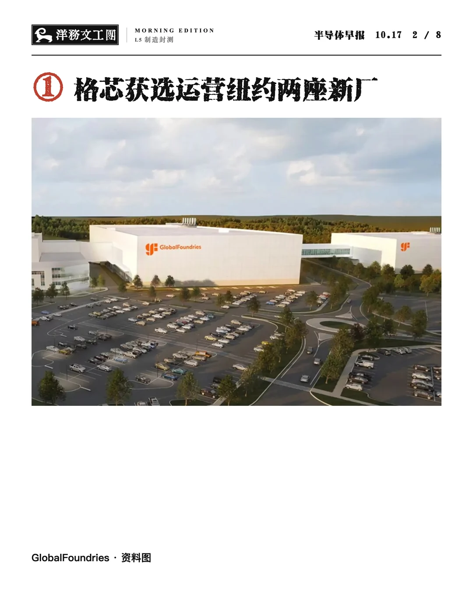
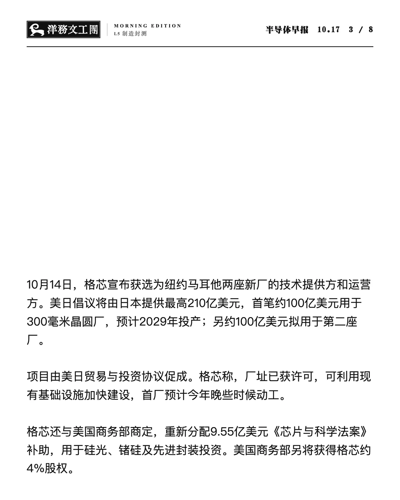
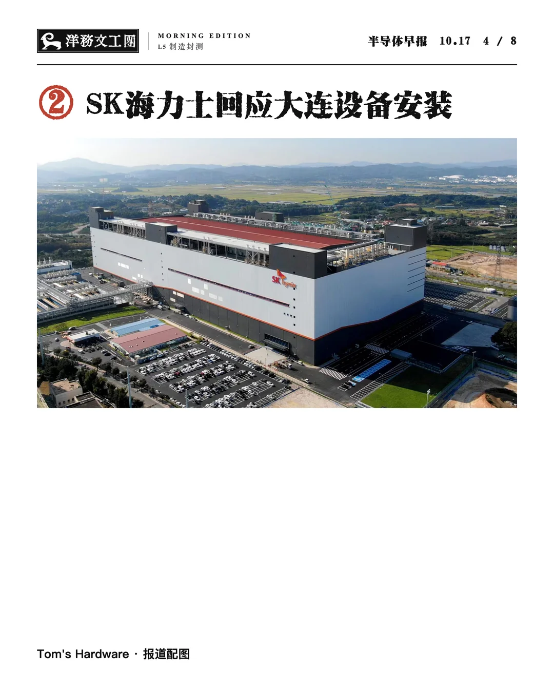
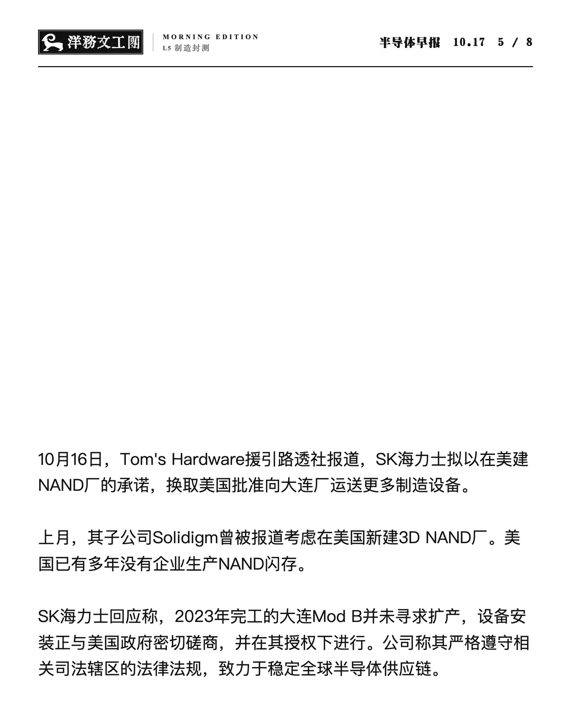
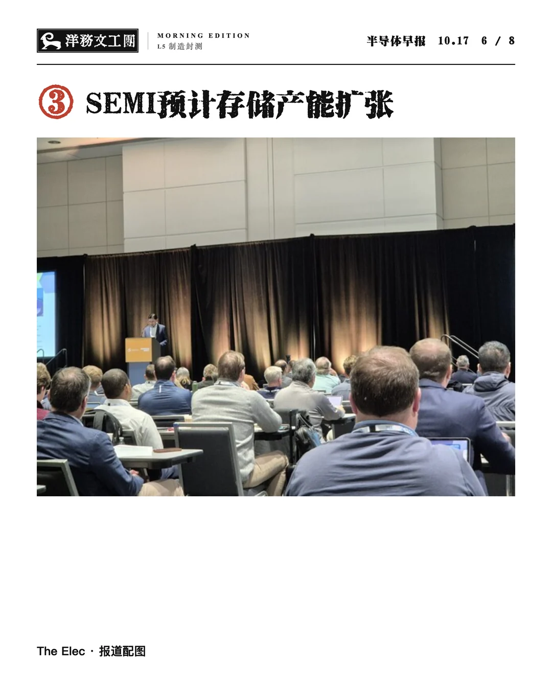
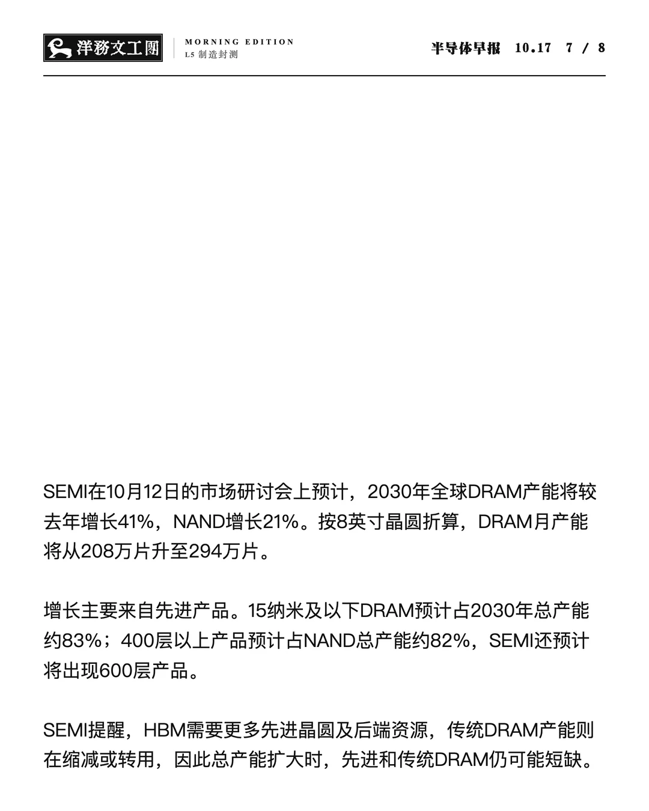
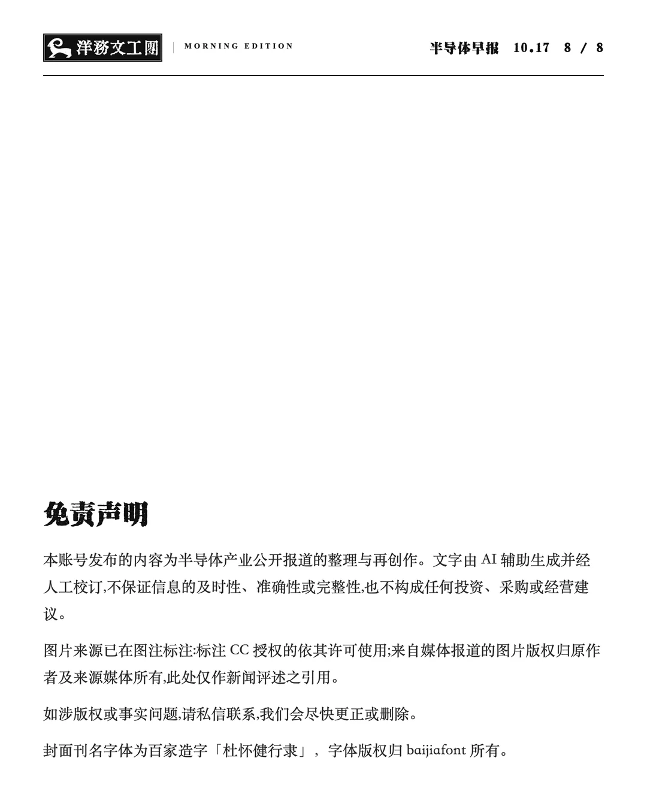

Semiconductor Daily半导体早报
一天三期，每期三则：把半导体新闻排成一份日报。
展开一期早报、午报、晚报
MORNING / MIDDAY / EVENING EDITIONS


点击图片放大阅读。三个刊次共用一套版式，只换底色、色带与图像处理：在一排封面里，早晚一眼可辨。
关于作品
01 / A DAILY EDITION新闻按钟点抵达。
三则一期，
一天三次，排成日报。
《Semiconductor Daily 半导体早报》延续《Automatic 生长半导体》的编辑实践，把单条新闻的图集改成了按时出版的日报。每天早上八点、中午十二点、晚上八点各出一期，每期从当天的新闻流里选出三则：一则主新闻上封面，另外两则随后展开。
程序负责取材与成文：读取公开的报道正文，一次写出三则的标题、正文与发布文案，并把稿件里的每一个数字和原始材料逐一对照。人负责判断：选哪三条、配哪张图、哪句话要改、什么时候不出这一期。审稿与选图可以在电脑上完成，也可以在手机上点选完成。
版式刻意保持稳定。刊头是「洋務文工團」匾额，刊名用书法字写出「半導體早報」，日期取代期号；每则新闻占两页，一页原图，一页文字。走量不等于草率：在固定的形式里，每天的差别只来自新闻本身。
A daily edition of semiconductor news, published three times a day. Each issue gathers three stories: software reads public reporting, drafts the text in one pass and checks every figure against its sources; the editor chooses the stories and images, revises the copy and decides when not to publish. A fixed layout — plaque masthead, calligraphic title, two pages per story — lets the news itself be the only thing that changes.
- 创作者
- 黄熠 Yi Huang
- 时间
- 2026.10—
- 媒介
- 新闻、生成文本、数字图像、编辑程序、即时通讯
- 系列
- 数字媒介本体系列
三则新闻，如何成为一期
02 / THE WORKFLOW-
01
到点
八点、十二点、二十点，抓取一次新闻，把最相关的八条推到手机上。
-
02
选题
依次点出三条，第一条为主新闻；不想出，这一期就不出。
-
03
取材
只读公开可见的正文与文章配图，付费墙后的段落不取。
-
04
成文
一次写出三则的标题、两三段正文与文案，并核对每个数字。
-
05
审稿
在编号拼图里选配图和封面，回复一句话即可改字、补图。
-
06
出版
排成封面、六页内页与声明，归档；最后由人亲手发布。
展开一期
03 / ONE COMPLETE EDITION早报 · 示例
一则两页：一页图，一页字。
格芯获选运营纽约两座新厂 · SK海力士回应大连设备安装 · SEMI预计存储产能扩张
报道来源见作品资料 ↓














作品资料
COLOPHON
创作、编辑与视觉编排：黄熠
文字由 AI 辅助生成，经人工审阅。
刊头匾额「洋務文工團」：Oradano 明朝（公有领域）。
网页展示的是一期示例，图片保留图内署名。
示例一期的报道来源
- ① · GlobalFoundries 新闻稿 ↗
- ② · Tom's Hardware（援引路透社）↗
- ③ · The Elec ↗